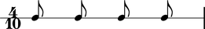

Prolation
Abjad uses prolation as a cover term for rhythmic augmentation and diminution. Augmentation increases the duration of notes, rests, chords and tuplets. Diminution does the opposite. Western notation employes tuplet brackets and special types of time signature to effect prolation.
Tuplet prolation
Abjad supports two different types of tuplet. Fixed-duration tuplets and fixed-multiplier tuplets both prolate their contents.
abjad> tuplet = FixedDurationTuplet((5, 8), Note(0, (1, 8)) * 4) abjad> staff = RhythmicStaff([Measure((5, 8), [tuplet])]) abjad> Beam(tuplet) abjad> tuplet.duration.augmentation True abjad> show(staff)
abjad> tuplet.duration.multiplier Rational(4, 5)
abjad> note = tuplet[0] abjad> note.duration.written Rational(1, 8)
abjad> note.duration.prolation Rational(5, 4)
abjad> note.duration.prolated Rational(5, 32)
The tuplet here augments its contents and carries a tuplet multiplier equal to 4/5. Notes here with written duration equal to 1/8 carry prolation factor equal to 4/5 and prolated duration equal to 5/4 * 1/8 = 5/32.
Meter prolation
Time signatures in western notation usually carry a denominator equal to some nonnegative integer power of 2. We can call these conventional meters binary meters. Denominators equal to integers other than integer powers of 2 are also possible. Such nonbinary meters prolate the music they contain.
abjad> measure = Measure((4, 10), Note(0, (1, 8)) * 4) abjad> Beam(measure) abjad> staff = RhythmicStaff([measure]) abjad> note = staff.leaves[0] abjad> note.duration.prolation Rational(4, 5) abjad> show(staff)
abjad> note.duration.prolated Rational(1, 10)
The nonbinary 4/10 meter here prolates the contents of the measure it governs by a prolation factor equal to 4/5. The notes here with written duration of 1/8 carry prolated duration equal to 4/5 * 1/8 = 1/10.
Nonbinary meters only ever diminish, and never augment, the contents of the measures they govern.
The prolation chain
Tuplets nest. And tuplet prolation and meter prolation combine freely. When two or more prolation donors conspire, the prolation factor they collectively bestow on leaf-level music equals the cumulative product of all prolation factors in the prolation chain.
abjad> tuplet = FixedDurationTuplet((4, 8), Note(0, (1, 16)) * 7) abjad> Beam(tuplet) abjad> measure = Measure((4, 10), [tuplet]) abjad> staff = RhythmicStaff([measure]) abjad> tuplet.duration.multiplier Rational(8, 7) abjad> show(staff)
abjad> measure.duration.compression Rational(4, 5)
abjad> note = measure.leaves[0] abjad> note.duration.prolations [Rational(8, 7), Rational(4, 5)]
abjad> note.duration.prolation Rational(32, 35)
abjad> note.duration.prolated Rational(2, 35)
The tuplet here augments the notes it contains by a prolation factor equal to 8/7. The nonbinary 4/10 meter diminishes the contents of the measure it governs by a prolation factor equal to 4/5. The prolation chains of the notes here equal the cumulative product 8/7 * 4/5 of the prolation factors tied to the tuplet and nonbinary measure inside of which each note nests. Each note carries a prolation factor equal to 8/7 * 4/5 = 32/35. And each note with written duration equal to 1/16 carries prolated duration equal to 32/35 * 1/16 = 2/35.
All durated objects everywhere carry a prolation chain. Only the prolation chains of nested objects are interesting.
Western notation does not recognize tuplet brackets carrying one-to-one ratios. Such trivial tuplets may, however, be useful during different stages of composition, and Abjad allows them for that reason. Trivial tuplets carry zero prolation. Zero-prolated tuplets neither augment nor diminish the music they contain.
Abjad implements one of two competing nonbinary meter-interpretation schemes. The first, implicit meter-interpretation given here, follows, for example, Ferneyhough, in that nonbinary meters prolate the contents of the measures they govern implicitly, ie, without recourse to tuplet brackets. The second, explicit meter-interpretation, which we find in, for example, Sciarrino, insists instead on the presence of some tuplet bracket, usually engraved in some broken or incomplete way. The implicit meter-interpretation that Abjad implements differs from the explicit meter-interpretation native to LilyPond. Abjad will eventually implement both implicit and explicit meter-interpretation, settable on a container-by-container basis.
Nonbinary meters n/d diminish the contents of the measures they govern by a factor j/k, with k = d, and with j equal to the greatest integer power of 2 less than d. That is, j = 2 ** int(log(2, d)).
The notion of prolation roles is just starting to work out of the language introduced here. If we identify tuplets and nonbinary measures as prolation donors and then identify all durated classes as prolation recipients then we have the beginnings of language to explain prolation roles.
Prolation roles become particularly interesting when we look at the direction of giving which prolation factors undergo. Tuplets, for example, play the prolation donor and prolation recipient role at once. Because of this, tuplets both prolate their contents by a prolation factor equal to
tuplet.duration.multiplierand are, in turn, prolated by a prolation factor equal totuplet.duration.prolation. That is, tuplets receive one prolation factor from objects higher up in the score tree and donate a different prolation factor to objects lower in the score tree. Nonbinary measures parallel this situation. Nonbinary measures receive a prolation factor from objects higher up in the score tree equal tomeasure.duration.prolation. At the same time, nonbinary measures donate a prolation factor to objects lower in the score tree equal tomeasure.duration.compression. Measure compression and tuplet multiplier therefore behave in an analagous way that improvements to our language could help clarify.